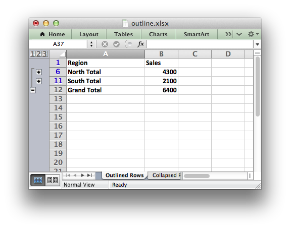
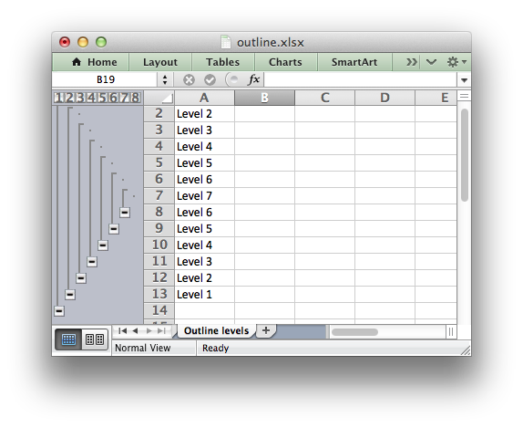

Working with Outlines and Grouping
Excel allows you to group rows or columns so that they can be hidden or displayed with a single mouse click. This feature is referred to as outlines and grouping.
Outlines can reduce complex data down to a few salient sub-totals or summaries.
For example the following is a worksheet with three outlines. Rows 2-11 are grouped at level 1 and rows 2-5 and 7-10 are grouped at level 2. The lines at the left hand side are called outline level bars and the level is shown by the small numeral above the outline.

Clicking the minus sign on each of the level 2 outlines will collapse and hide the data as shown below. The minus sign changes to a plus sign to indicate that the data in the outline is hidden.
This shows the usefulness of outlines: with 2 mouse clicks we have reduce the amount of visual data down to 2 sub-totals and a master total.
Clicking on the minus sign on the level 1 outline will collapse the remaining rows as follows:

Outlines and Grouping in XlsxWriter
Grouping in XlsxWriter is achieved by setting the outline level via the set_row() and set_column() worksheet methods:
worksheet.set_row(row, height, format, options)
worksheet.set_column(first_col, last_col, width, format, options)
Adjacent row or columns with the same outline level are grouped together into a single outline.
The 'options' parameter is a dictionary with the following possible keys:
- 'hidden'
- 'level'
- 'collapsed'
Options can be set as follows:
worksheet.set_row(0, 20, cell_format, {'hidden': True})
# Or use defaults for other properties and set the options only.
worksheet.set_row(0, None, None, {'hidden': True})
The following example sets an outline level of 1 for rows 1 and 2 (zero-indexed) and columns B to G. The parameters height and cell_format are assigned default values:
worksheet.set_row(1, None, None, {'level': 1})
worksheet.set_row(2, None, None, {'level': 1})
worksheet.set_column('B:G', None, None, {'level': 1})

Excel allows up to 7 outline levels. Therefore the level parameter should be in the range 0 <= level <= 7.
Rows and columns can be collapsed by setting the hidden flag for the hidden rows/columns and setting the collapsed flag for the row/column that has the collapsed '+' symbol:
worksheet.set_row(1, None, None, {'level': 1, 'hidden': True})
worksheet.set_row(2, None, None, {'level': 1, 'hidden': True})
worksheet.set_row(3, None, None, {'collapsed': True})
worksheet.set_column('B:G', None, None, {'level': 1, 'hidden': True})
worksheet.set_column('H:H', None, None, {'collapsed': True})
Note
Setting the collapsed flag is particularly important for compatibility with non-Excel spreadsheets.
For a more complete examples see Example: Outline and Grouping and Example: Collapsed Outline and Grouping.
Some additional outline properties can be set via the outline_settings() worksheet method.